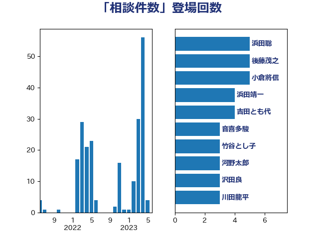

単語「相談件数」

| 浜田聡 | NHK党 | 5 回 |
| 後藤茂之 | 自由民主党 | 5 回 |
| 小倉將信 | 自由民主党 | 5 回 |
| 浜田靖一 | 自由民主党 | 4 回 |
| 吉田とも代 | 日本維新の会 | 4 回 |
| 音喜多駿 | 日本維新の会 | 3 回 |
| 竹谷とし子 | 公明党 | 3 回 |
| 河野太郎 | 自由民主党 | 3 回 |
| 沢田良 | 日本維新の会 | 3 回 |
| 川田龍平 | 立憲民主党 | 3 回 |
| 岸真紀子 | 立憲民主党 | 3 回 |
| 宮本岳志 | 日本共産党 | 3 回 |
| 伊佐進一 | 公明党 | 3 回 |
| 齋藤健 | 自由民主党 | 2 回 |
| 長谷川英晴 | 自由民主党 | 2 回 |
| 野田聖子 | 自由民主党 | 2 回 |
| 萩生田光一 | 自由民主党 | 2 回 |
| 田中健 | 国民民主党 | 2 回 |
| 梅村聡 | 日本維新の会 | 2 回 |
| 本村伸子 | 日本共産党 | 2 回 |
| 早稲田ゆき | 立憲民主党 | 2 回 |
| 宮本徹 | 日本共産党 | 2 回 |
| 安江伸夫 | 公明党 | 2 回 |
| 塩田博昭 | 公明党 | 2 回 |
| 塩村あやか | 立憲民主党 | 2 回 |
| 塩川鉄也 | 日本共産党 | 2 回 |
| 吉田統彦 | 立憲民主党 | 2 回 |
| 加藤勝信 | 自由民主党 | 2 回 |
| 倉林明子 | 日本共産党 | 2 回 |
| 伊藤岳 | 日本共産党 | 2 回 |
| 中司宏 | 日本維新の会 | 2 回 |
| 上田清司 | 国民民主党 | 2 回 |
| 三上えり | 立憲民主党 | 2 回 |
| 高良鉄美 | 無所属 | 1 回 |
| 高木かおり | 日本維新の会 | 1 回 |
| 馬場雄基 | 立憲民主党 | 1 回 |
| 鎌田さゆり | 立憲民主党 | 1 回 |
| 鈴木貴子 | 自由民主党 | 1 回 |
| 野田佳彦 | 立憲民主党 | 1 回 |
| 里見隆治 | 公明党 | 1 回 |
| 谷川とむ | 自由民主党 | 1 回 |
| 谷公一 | 自由民主党 | 1 回 |
| 西銘恒三郎 | 自由民主党 | 1 回 |
| 西村智奈美 | 立憲民主党 | 1 回 |
| 西岡秀子 | 国民民主党 | 1 回 |
| 葉梨康弘 | 自由民主党 | 1 回 |
| 竹詰仁 | 国民民主党 | 1 回 |
| 稲津久 | 公明党 | 1 回 |
| 福山哲郎 | 立憲民主党 | 1 回 |
| 石垣のりこ | 立憲民主党 | 1 回 |
| 石原正敬 | 自由民主党 | 1 回 |
| 石井苗子 | 日本維新の会 | 1 回 |
| 石井拓 | 自由民主党 | 1 回 |
| 田村智子 | 日本共産党 | 1 回 |
| 田村まみ | 国民民主党 | 1 回 |
| 牧山ひろえ | 立憲民主党 | 1 回 |
| 漆間譲司 | 日本維新の会 | 1 回 |
| 渡辺博道 | 自由民主党 | 1 回 |
| 池畑浩太朗 | 日本維新の会 | 1 回 |
| 池下卓 | 日本維新の会 | 1 回 |
| 櫻井周 | 立憲民主党 | 1 回 |
| 柴田巧 | 日本維新の会 | 1 回 |
| 柳本顕 | 自由民主党 | 1 回 |
| 日下正喜 | 公明党 | 1 回 |
| 新垣邦男 | 立憲民主党 | 1 回 |
| 庄子賢一 | 公明党 | 1 回 |
| 広瀬めぐみ | 自由民主党 | 1 回 |
| 平沼正二郎 | 自由民主党 | 1 回 |
| 平木大作 | 公明党 | 1 回 |
| 岸田文雄 | 自由民主党 | 1 回 |
| 岡本あき子 | 立憲民主党 | 1 回 |
| 山添拓 | 日本共産党 | 1 回 |
| 山岸一生 | 立憲民主党 | 1 回 |
| 山井和則 | 立憲民主党 | 1 回 |
| 小沢雅仁 | 立憲民主党 | 1 回 |
| 小宮山泰子 | 立憲民主党 | 1 回 |
| 宮崎勝 | 公明党 | 1 回 |
| 大西健介 | 立憲民主党 | 1 回 |
| 大塚耕平 | 国民民主党 | 1 回 |
| 塩崎彰久 | 自由民主党 | 1 回 |
| 堤かなめ | 立憲民主党 | 1 回 |
| 嘉田由紀子 | 無所属 | 1 回 |
| 吉良よし子 | 日本共産党 | 1 回 |
| 吉田久美子 | 公明党 | 1 回 |
| 古庄玄知 | 自由民主党 | 1 回 |
| 古屋範子 | 公明党 | 1 回 |
| 勝目康 | 自由民主党 | 1 回 |
| 井野俊郎 | 自由民主党 | 1 回 |
| 井原巧 | 自由民主党 | 1 回 |
| 丸川珠代 | 自由民主党 | 1 回 |
| たがや亮 | れいわ新選組 | 1 回 |